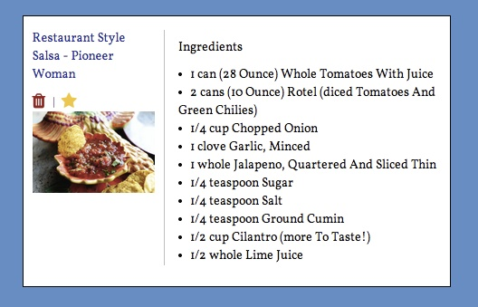

Ingredients
{{ingredient.qty}} {{ingredient.meas}} {{ingredient.ing}}
Add recipes to your favorites page by clicking the yellow star on the recipe you want to add.
(hint: look at the star!)
Ingredients
{{ingredient.qty}} {{ingredient.meas}} {{ingredient.ing}}